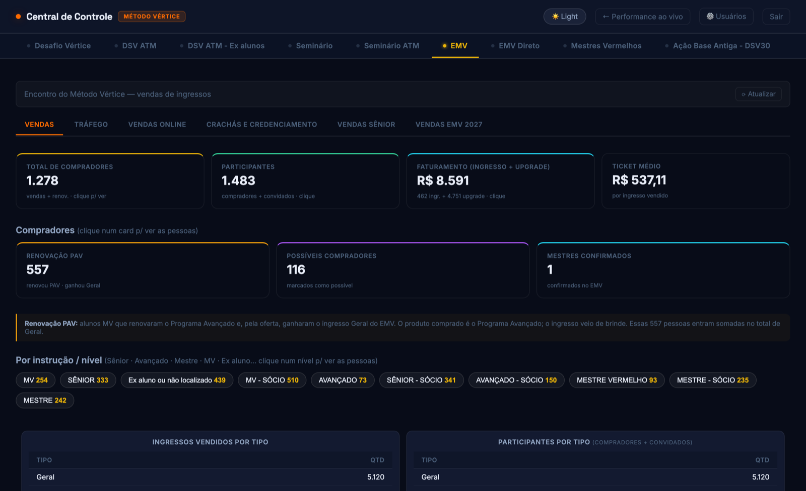
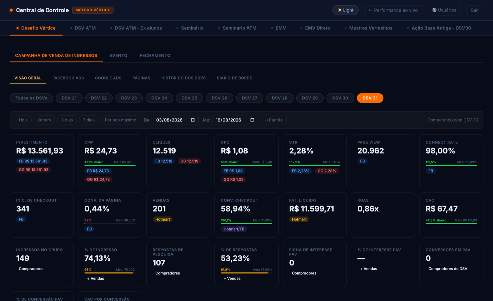
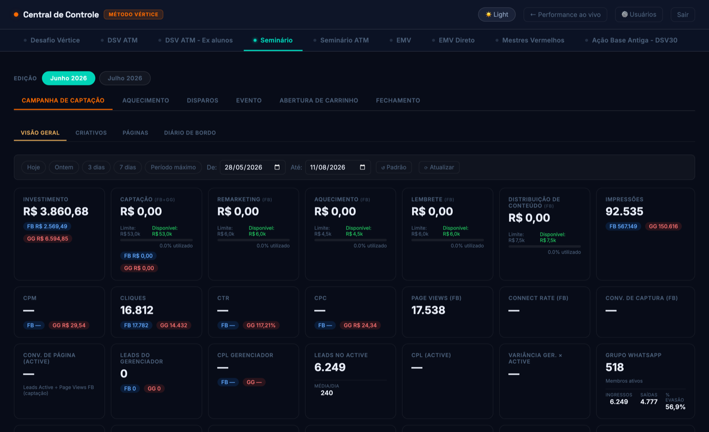
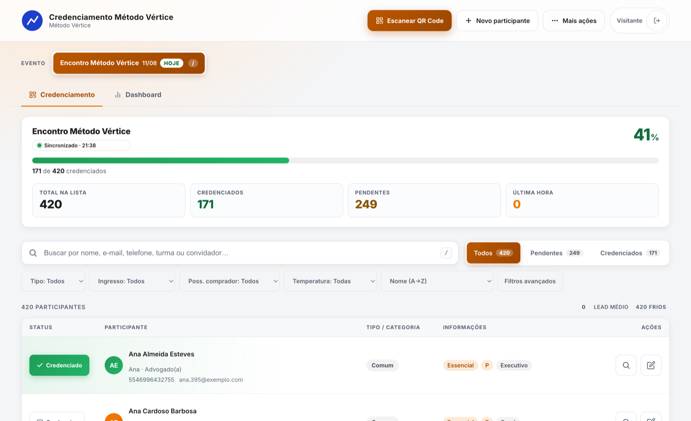

Projetos
Projeto principal
Central de controle de lançamento
A camada de dados de um lançamento inteiro, construída por mim de ponta a ponta: seis integrações, ingestão, normalização e cada métrica definida. Sete frentes usam todo dia.
R$ 500 mil em verba · 6 fontes · 7 frentes


Painel do encontro presencial O maior evento do ano, com mais de R$ 2 milhões faturados em poucos dias. Consolidei três canais de venda, upgrades, trocas de ingresso e o cruzamento com o credenciamento da porta. R$ 2 mi+ faturados · 3 canais de venda
Painel do evento de venda de ingresso Ciclo curto, uma edição atrás da outra. O ponto difícil não é medir venda, é atribuir: construí a contagem pelo rastreio da própria venda, porque o gerenciador infla e duplica. edição a cada 14 dias · atribuição por venda
Painel do evento de captação Aqui o que decide não é volume de lead, é a proporção dentro do perfil. Montei custo e qualidade na mesma tela, porque criativo barato que traz público errado sai caro no fim. edição mensal · CPL e qualidade juntos
Sistema de credenciamento do encontro O aplicativo da porta: leitura por QR, crachá, troca de titularidade e auditoria de toda alteração. Funciona offline, porque casa de evento é onde a rede cai. leitura por QR · offline · auditoriaOutros projetos entram aqui conforme eu for documentando.